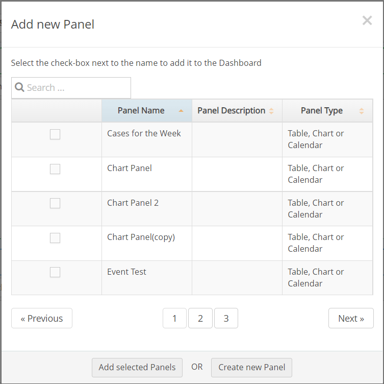
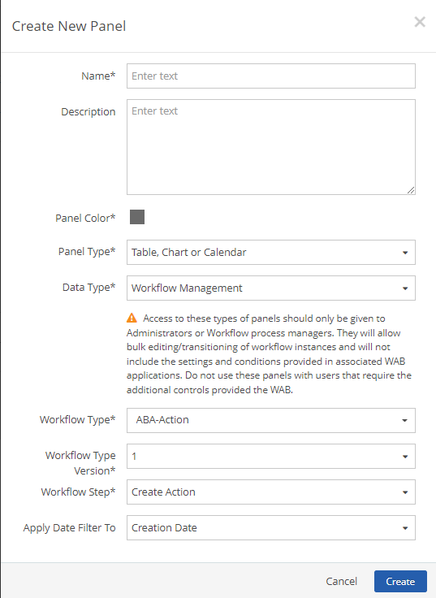
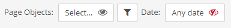
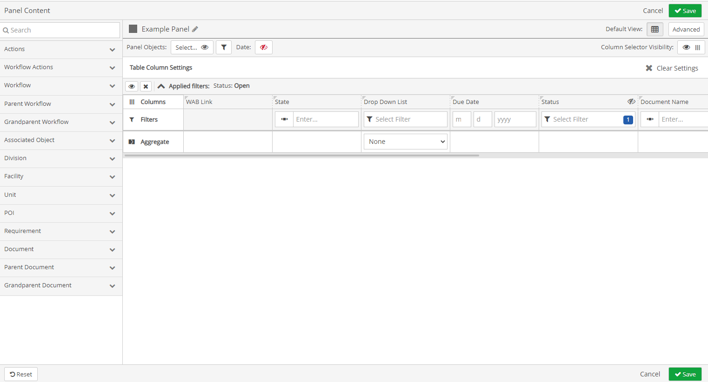
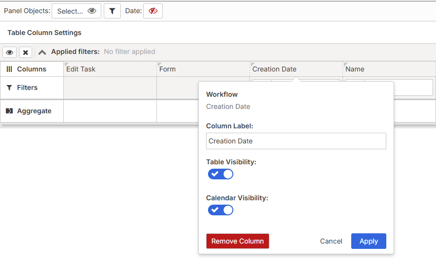
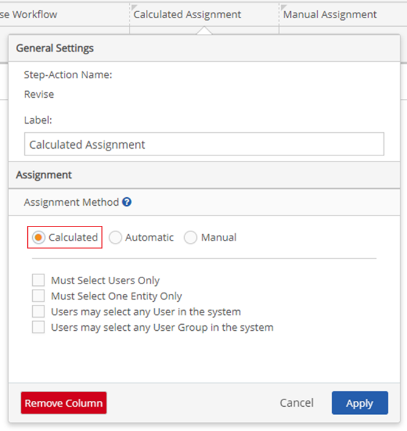
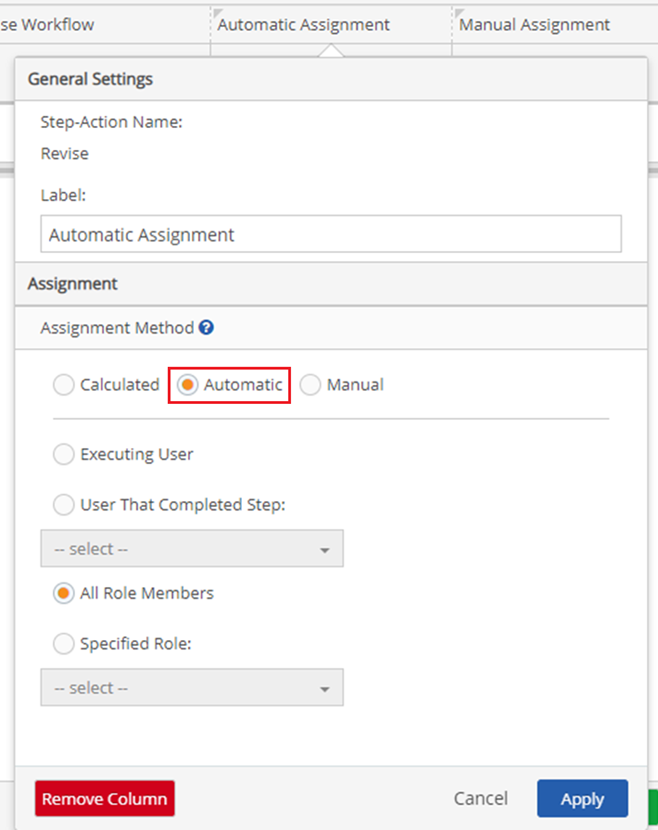
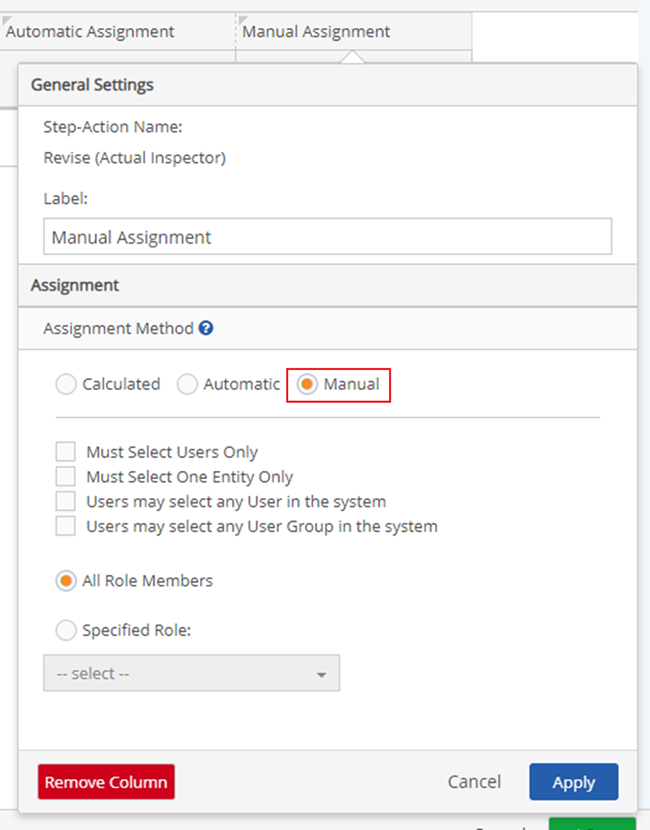
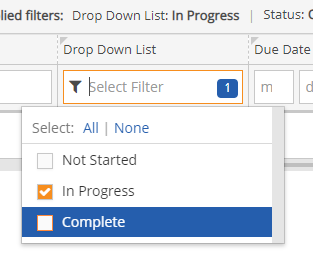
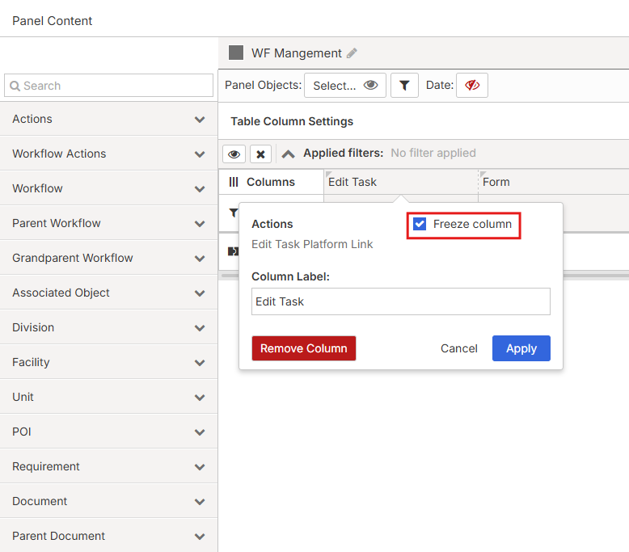

The Bulk Workflow Management panel allow managers and reviewers to edit and transition large volumes of Workflows within a single panel.
Create a Bulk Workflow Management Panel
To add a customized Bulk Workflow Management panel:
In the Portal, navigate to a portal page, and then click the Page Settings icon.
On the Page Settings window, click +Panel. The Add New Panel window will open.

Click Create new Panel, at the bottom of the window.The Create New Panel window will open.
On the Create New Panel window, enter a Name for the panel.
You can provide a description, but it is not mandatory.
Click the Panel Color box and select a color.
Click the Panel Type dropdown textbox and select Panel type.
Click the Data Type dropdown textbox and select Workflow Management.

Access Prompt is a reminder of who should be given access to this panel types.
To choose the workflow type that you would like to bulk together for your review, edit, and approval, click the Workflow Type dropdown textbox, and select your preferred option.
To filter workflows based on date range that you would like to build together for your review, edit, and approval, click Apply Date Filter To, and select a preferred option.
Click Create.
Configure a Bulk Workflow Management Panel
To edit the setting of the Bulk Workflow Management panel that you created:
On the Portal page, you can edit the Panel Object, and Date as needed.

At the center of the panel on the portal page, click Edit Panel Content.
The Panel Content window will open.
On the Panel Content window, the Panel name will be the same value inputted as the Panel name when creating the new Panel.

To add columns to the Applied filters table of the Bulk Workflow table, in the Field Selector section (left pane) search fields using the search textbox, and then click + to the right of a field. The field will move to the Applied Filters section.
You can click and drag fields from the navigation field that you would like to include in the Applied Filters section.
Fields that are unique to the Bulk Workflow Panel are:
Workflow Actions Fields:
Close Workflow
Delete Workflow
Reopen Workflow
These three workflow actions will be available in the workflow actions tab for any workflow type/step/version combination.
Additional workflow actions that are configured to the selected workflow type/step/version combination can also be added as a column.
Parent and Grandparents document fields. Users can view these fields if they are reviewing a child workflow and want to see further information from the parent or grandparent workflow.
To edit a column field on the Applied Filters table, click a Column Field.
The column edit window opens.

On the Column Edit window you can change the label of the column field. If the field type supports bulk editing, there will be an option to make that column read only if you don’t want users to be able to edit that field.
If the Column Edit window is a workflow action field created by the user, the following can be edited:
Label.
Assignment, which can be changed to Calculated, Automatic, or Manual.
When Calculated is selected, the user will only be prompted for assignment if they are not a role member of the destination step’s role.

When Automatic is selected, you can further select who the Workflow Action would be assigned to next. The end user would not receive a prompt for workflow assignment and the workflow instance would be assigned as configured here.

When Manual is selected, the users will be prompted to select who the workflow will be assigned to.

Click Apply.
To remove a Column Field, on the Column Edit window click Remove Column. The field can be re-added from the menu at any time.
Once the table has all the columns you want, you can filter column fields by clicking the dropdown text box under a column header.

Once you have added all the fields you want to include and filters are set as needed for these fields, click Save.
Freeze Columns
You can choose to freeze columns on the table, starting with the left most column and adding additional columns as required. To freeze columns:
Click the Edit Task column to open the Column Edit window.
On the Column Edit window, check the Freeze Column checkbox.

Once the first column is frozen, the Freeze Column checkbox will be available in the Column Edit window for the next column. Continue for each column as needed.